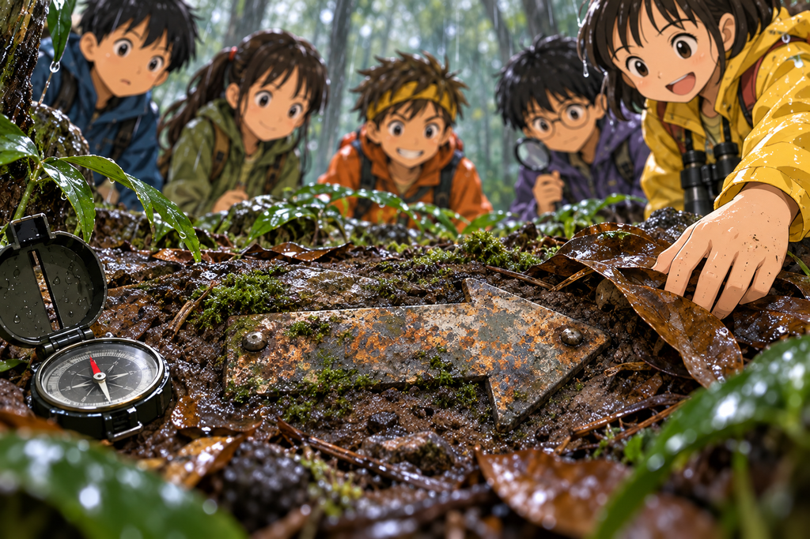

เสียงใต้ภูเขา
เวลาอ่านประมาณ 11 นาที · Sound / Vibration / Mystery
ฝาขวดน้ำยังวางอยู่บนพื้นดินตรงหน้าเด็กทั้งห้า
ผิวน้ำในฝานิ่งสนิทอยู่ครู่หนึ่ง แล้วจู่ ๆ ก็เกิดวงกระเพื่อมเล็ก ๆ เหมือนมีใครแตะมันจากข้างล่าง
ตึก…
ปั้นก้มมองนาฬิกา “สิบเอ็ดวินาที”
ไม่มีใครพูดอะไร ทุกคนรอ
ผ่านไปสิบเอ็ดวินาที วงน้ำก็กระเพื่อมอีกครั้ง
ตึก…
ต้นกล้ากลืนน้ำลาย “ถ้าพื้นดินมีจังหวะเป็นของตัวเอง เราไม่ค่อยแน่ใจว่านี่เป็นเรื่องดีนะ”
ฟ้านั่งยอง ๆ ข้างฝาขวด “มันเหมือนมีใครเคาะประตูจากข้างล่างเลยค่ะ”
นนท์มองไปทางเหนือ ทิศเดียวกับแสงสีเขียวเมื่อคืน “เราไม่รู้ว่ามันคืออะไร แต่เรารู้ว่ามันสม่ำเสมอ”
มีนารวบผมที่ยังชื้นไปไว้ด้านหลัง “สม่ำเสมอแปลว่าอาจไม่ใช่ธรรมชาติ”
ปั้นพยักหน้า “หรือเป็นธรรมชาติที่มีจังหวะก็ได้ เช่น น้ำหยดในถ้ำ แต่สิบเอ็ดวินาทีเท่ากันเป๊ะหลายรอบ มันแปลกมาก”
ต้นกล้าชี้ไปข้างหน้า “งั้นไปดูกันเลยไหม”
นนท์ส่ายหน้า “ไปได้ แต่ต้องไปแบบที่รู้ทางกลับ”
1
ก่อนออกจากที่พักชั่วคราว นนท์ให้ทุกคนช่วยกันเก็บเฉพาะของที่จำเป็นที่สุด
พวกเขาแบ่งน้ำต้มที่เหลือใส่ขวดสองใบ เก็บขวดเปล่าอีกสามใบไว้ทำการทดลอง ม้วนเชือกให้หยิบง่าย แล้วแขวนนกหวีดของฟ้าไว้ด้านหน้าเสื้อกันฝน
“เราจะไม่แยกกันเด็ดขาด” นนท์พูด “เดินเป็นกลุ่ม หยุดพร้อมกัน แล้วถ้านนท์บอกถอย ทุกคนถอยทันที”
ต้นกล้ายกมือ “ถ้าเราเห็นอะไรน่าสนใจมาก ๆ ล่ะ”
“บอกก่อน แล้วค่อยขยับ” มีนาตอบแทนนนท์
“ทุกคนรู้จักเราดีเร็วเกินไปแล้วนะ”
ฟ้าหัวเราะเบา ๆ แต่มืออีกข้างยังกำสายสะพายกระเป๋าไว้แน่น
มีนาผูกเศษผ้าสีสดไว้กับกิ่งไม้ตามทาง เธอเลือกกิ่งที่แข็งแรง และผูกแบบหลวม ๆ เพื่อไม่ให้รัดต้นไม้
“นี่คือร่องรอยกลับบ้านแบบไม่ทำร้ายป่า” เธอบอก
ปั้นจดทิศทางลงสมุด “จากที่พักไปทางเหนือสิบเจ็ดองศา เดินช้าเพราะพื้นลื่น”
ฟ้าชะโงกดู “สิบเจ็ดองศาคือเหนือแบบเอียงนิดเดียวใช่ไหมคะ”
“ใช่” ปั้นตอบ “เหนือที่ไม่ค่อยตั้งใจเป็นเหนือ”
ต้นกล้าหันไปยิ้ม “อ้าว นายก็มีมุกกับเขาด้วยนี่”
ปั้นทำหน้าเหมือนไม่แน่ใจว่านั่นเป็นคำชมหรือเปล่า
2
ป่าทางเหนือต่างจากทางที่พวกเขาเดินมาเมื่อวาน
ต้นไม้ขึ้นแน่นกว่า พื้นมีหินโผล่มากกว่า และมอสสีเขียวเข้มคลุมตามโคนไม้เหมือนผ้าห่มเปียก ๆ
ทุกสิบเอ็ดวินาที พื้นจะสั่นเบา ๆ ครั้งหนึ่ง ไม่แรงพอจะทำให้ล้ม แต่แรงพอให้รู้สึกผ่านพื้นรองเท้าตอนยืนนิ่ง
“ถ้าเดินอยู่จะไม่ค่อยรู้สึก” มีนาพูด “แต่ถ้าหยุด มันจะชัดขึ้นมาเลย”
นนท์ให้ทุกคนลองยืนเงียบ ๆ โดยไม่พูดอะไร
หนึ่ง…
สอง…
สาม…
ตึก…
ฟ้าสะดุ้งนิดหนึ่ง “รู้สึกที่เท้าจริง ๆ ด้วยค่ะ”
ต้นกล้าทำท่าจะกระทืบพื้นกลับ
“อย่า” นนท์พูดทันที
“เรายังไม่ได้ทำเลยนะ”
“ก็เพราะเราเริ่มเดาใจนายออกแล้วไง”
ระหว่างเดิน พวกเขาเริ่มได้ยินเสียงทุ้มต่ำตามมาด้วย แต่เสียงนั้นแปลกมาก บางครั้งเหมือนมาจากข้างหน้า บางครั้งเหมือนมาจากทางซ้าย และบางครั้งก็เหมือนอยู่ใต้ฝ่าเท้า
ไม่นานพวกเขาก็มาถึงหน้าผาหินสูง ผนังหินเปียกน้ำ มีหยดน้ำไหลลงมาเป็นเส้นเล็ก ๆ
เสียงทุ้มดังขึ้นทันทีเหมือนภูเขากำลังพูดอยู่ข้างหู
ครืม…
“ไม่ต้องเข้าไปยืนชิดผนัง” มีนาเตือนขึ้นก่อนใคร “ฝนเพิ่งตกหนัก หินกับดินข้างบนอาจร่วงลงมาได้”
ทุกคนถอยออกมาสองก้าว ต้นกล้าแนบหูกับก้อนหินที่วางอยู่ห่างออกมา “ทางซ้ายดังสุด”
มีนาชี้ผนังหิน “หรือเป็นเสียงสะท้อนจากตรงนี้ก็ได้”
ฟ้ามองหน้าผาอย่างระแวง “หน้าผาหลอกหูเราได้ด้วยเหรอคะ”
“ได้” นนท์ตอบ “เสียงกระทบของแข็งแล้วเด้งกลับมา ถ้าเราไม่ระวัง เราจะคิดว่าต้นเสียงอยู่ผิดที่”
3
ปั้นหยิบกิ่งไม้เล็ก ๆ ขึ้นมา เคาะเบา ๆ กับก้อนหิน
แก๊ก!
เสียงสะท้อนกลับมาจากผนังหินแทบจะทันที
เขาเคาะอีกครั้ง แต่คราวนี้เดินห่างออกไปสามก้าว เสียงเปลี่ยนไปเล็กน้อย
“เสียงในอากาศเปลี่ยนตามตำแหน่งเร็วมาก” ปั้นพูด “แต่แรงสั่นในพื้นไม่เหมือนกัน”
นนท์หยิบขวดน้ำสามใบออกมา “งั้นเราใช้ตาแทนหูก็ได้”
เขาเติมน้ำลงในขวดแต่ละใบให้สูงพอ ๆ กัน แล้ววางแยกกันเป็นรูปสามเหลี่ยมบนพื้น ห่างกันประมาณสามช่วงแขน
มีนาช่วยเลือกตำแหน่งที่พื้นไม่เอียงเกินไป ส่วนต้นกล้าหากิ่งเล็ก ๆ มาพาดไว้บนปากขวด
“ถ้าพื้นสั่น กิ่งจะขยับหรือเคาะขวด” นนท์อธิบาย
ฟ้าคุกเข่าดูขวดใบที่อยู่ใกล้ตัว “เหมือนทำให้แรงสั่นมีเสียงเป็นของตัวเองเลยค่ะ”
ปั้นเปิดสมุด “รอบที่หนึ่ง เริ่มจับเวลา”
ทุกคนเงียบ
ตึก…
ขวดใบที่อยู่ใกล้หน้าผาสั่นนิดเดียว แต่เสียงที่ได้ยินกลับดังมาก
ส่วนขวดใบที่อยู่บนเนินทางเหนือ ผิวน้ำกระเพื่อมชัดกว่า ทั้งที่เสียงรอบตัวเบากว่า
ปั้นจดผล “จุดใกล้หน้าผา เสียงดัง สั่นน้อย จุดบนเนิน เสียงเบา สั่นมาก”
ต้นกล้าเกาหัว “แปลว่าเสียงดังโกหกเราเหรอ”
มีนาตอบ “ไม่ใช่โกหก แต่มันบอกเราแค่ส่วนเดียว”

เสียงสะท้อนหลอกหูได้ แต่รูปแบบแรงสั่นสะเทือนให้เบาะแสอีกแบบ
4
พวกเขาย้ายขวดไปทดลองอีกสองตำแหน่ง ครั้งแรกเข้าใกล้หน้าผามากขึ้น เสียงดังจนฟ้าต้องกำสายกระเป๋าแน่น แต่ผิวน้ำขยับเพียงนิดเดียว
ครั้งที่สอง พวกเขาวางขวดบนพื้นเนินที่มีรากไม้ขวางอยู่ เสียงแทบไม่ได้ยิน แต่กิ่งไม้บนปากขวดกลับกระทบเบา ๆ พร้อมกันสองใบ
กิ๊ก…
ปั้นตาโต “ตรงนี้แรงกว่า”
นนท์ลากนิ้วบนแผนที่ ไม่มีสัญลักษณ์อะไรในบริเวณนี้เลย มีเพียงพื้นที่สีเขียวของป่าเหมือนเดิม
“ถ้าต้นกำเนิดอยู่หลังหน้าผา แรงสั่นควรแรงขึ้นตอนเราเข้าใกล้หน้าผา” เขาพูด “แต่มันดันแรงขึ้นตอนอยู่บนเนิน”
มีนามองพื้น “อาจมีอะไรอยู่ใต้เนิน ไม่ใช่หลังหน้าผา”
ต้นกล้าก้มดูพื้นโคลน “ใต้เนินนี่แปลว่าใต้เท้าเราใช่ไหม”
ฟ้าถอยมายืนข้างมีนา “หนูขอไม่ยืนตรงคำว่าใต้เท้าเรานะคะ”
ทันใดนั้น แรงสั่นรอบต่อไปก็มาชัดกว่าครั้งก่อน
ตึก!
น้ำในขวดกระเพื่อมเป็นวงซ้อนกัน กิ่งเล็ก ๆ บนปากขวดสั่นจนตกลงพื้น
ทุกคนมองหน้ากัน
ปั้นพูดเสียงเบา “ระยะห่างยังสิบเอ็ดวินาทีเท่าเดิม แต่แรงเพิ่มขึ้น”
นนท์หันมองทางกลับที่มีเศษผ้าสีสดผูกไว้ “เราจะสำรวจอีกแค่ช่วงสั้น ๆ ถ้ามีอะไรเสี่ยง เรากลับทันที”
ต้นกล้าพยักหน้าเร็วผิดปกติ “คราวนี้เราเห็นด้วย”
🧠 หยุดคิดสักครู่
หน้าผาทำให้เสียงดังที่สุด แต่พื้นบนเนินสั่นแรงที่สุด ทีมควรเชื่อข้อมูลชิ้นไหน?
A. เดินเข้าหาจุดที่เสียงดังที่สุดทันที
B. ใช้ข้อมูลหลายแบบ ทดลองซ้ำ แล้วเลือกทิศที่สอดคล้องกันมากที่สุด
C. แยกกันเดินคนละทิศเพื่อประหยัดเวลา
เลือกไว้ในใจก่อน แล้วค่อยอ่านต่อนะ
5
ทีมเลือก B โดยไม่ต้องเถียงกันนานเหมือนตอนแรก ๆ
นนท์ให้ทุกคนช่วยกันวางขวดเป็นแนวสามเหลี่ยมอีกครั้ง ปั้นจับเวลา มีนามองพื้นกับต้นไม้รอบ ๆ ต้นกล้าคอยถือเชือกกับกระเป๋า ส่วนฟ้าคอยสังเกตสิ่งเล็ก ๆ ที่คนตัวโตกว่ามักมองข้าม
รอบแรก ขวดด้านตะวันตกเฉียงเหนือกระเพื่อมแรงที่สุด
รอบสอง ได้ผลเหมือนเดิม
รอบสาม มีเสียงสะท้อนจากหน้าผาดังแทรกเข้ามา แต่ขวดใบเดิมก็ยังสั่นแรงที่สุดอยู่ดี
“สามครั้งเหมือนกันหมด” ปั้นพูด “ข้อมูลเริ่มน่าเชื่อแล้ว”
ต้นกล้ายิ้ม “เราชอบเวลาวิทยาศาสตร์บอกว่าให้ไปทางไหน”
พวกเขาเดินตามแนวตะวันตกเฉียงเหนือของเนิน ทางช่วงนี้ไม่มีร่องรอยคนเดินเลย แต่ต้นไม้บางต้นขึ้นเป็นเส้นโค้งแปลก ๆ รากของมันหยุดตรงแนวเดียวกันหมด ราวกับมีพื้นแข็งอะไรบางอย่างอยู่ข้างใต้
มีนาคุกเข่าลงข้างมอสบนก้อนหิน “ตรงนี้แปลก”
มอสสีเขียวแยกออกเป็นร่องยาว ตรงเกินกว่าจะเป็นของธรรมชาติ เหมือนเคยมีบางอย่างพาดผ่านแล้วถูกทิ้งไว้นานมาก
เธอใช้กิ่งไม้เล็ก ๆ เขี่ยใบไม้ออก แล้วพบแถบยางสีดำฝังอยู่ใต้รากไม้
ต้นกล้ายื่นมือไปทันที “ลองดึงดูไหม”
นนท์คว้าข้อมือเขาไว้ “ห้ามแตะสายที่เราไม่รู้จัก”
ต้นกล้าชะงัก “เราแค่จะดึงเบา ๆ เอง”
“สายไฟไม่สนใจหรอกว่าเราดึงเบาหรือแรง” มีนาพูด
ฟ้ามองแถบสีดำ “มันเหมือนรากไม้ปลอมเลยค่ะ”
ปั้นจดลงสมุด “พบแถบยางหรือสายเก่า ทิศตะวันตกเฉียงเหนือ ใกล้จุดที่แรงสั่นสูงที่สุด”
6
พวกเขาเดินต่อไปอีกไม่ไกลก็เจอโขดหินที่ปกคลุมด้วยเถาวัลย์
ไม่มีทางเดิน ไม่มีอาคาร ไม่มีป้าย และไม่มีสิ่งใดที่ควรอยู่ในแผนที่
แต่ความรู้สึกใต้ฝ่าเท้ากลับชัดขึ้นทุกก้าว
ตึก…
ต้นกล้าลองเคาะพื้นด้วยส้นรองเท้าเบา ๆ ตรงจุดหนึ่ง เสียงทึบเหมือนดินแน่น
เขาขยับไปอีกด้านแล้วเคาะอีกครั้ง
กึก…
เสียงครั้งนี้กลวงกว่า
“เราไม่ได้กระทืบนะ” เขารีบบอก “เราเคาะแบบสุภาพ”
นนท์นั่งลง ใช้กิ่งไม้เขี่ยใบไม้เปียกออกจากพื้น ฟ้าช่วยปัดอย่างระวังจากอีกด้าน
ใต้ใบไม้มีแผ่นโลหะเล็กเท่าฝ่ามือฝังอยู่กับพื้น สีเทาหม่น มีรอยลูกศรตื้น ๆ แต่ไม่มีตัวหนังสือเลยสักตัว
ปั้นวางเข็มทิศลงข้างแผ่นโลหะ ลูกศรบนแผ่นชี้ตรงไปยังลาดเขาที่แน่นไปด้วยพุ่มไม้
“มันไม่ได้ชี้เหนือ” ปั้นพูด “แต่มันชี้ไปทางเดียวกับแนวแรงสั่น”
มีนามองพุ่มไม้ด้านหน้า “พุ่มตรงนั้นขึ้นแน่นมาก แต่มีลมเย็นออกมาด้วยนะ”
ฟ้าเอามือแตะอากาศใกล้ใบไม้ “เย็นจริงค่ะ เหมือนลมหายใจของภูเขา”
ทันใดนั้นแรงสั่นก็หยุดลง
ป่าเงียบจนได้ยินลมหายใจของทุกคน
ไม่มีเสียงน้ำกระเพื่อม ไม่มีเสียงทุ้ม ไม่มีจังหวะสิบเอ็ดวินาที
ความเงียบครั้งนี้น่ากลัวกว่าเสียงเสียอีก
แล้วจากหลังพุ่มไม้ ก็มีเสียงโลหะหนักขยับขึ้นมาเพียงครั้งเดียว
กึง!
ฟ้าคว้านกหวีดขึ้นมาโดยไม่เป่า
ต้นกล้าก้าวมาข้างหน้า แต่ไม่ได้วิ่งเข้าไป
นนท์ยกมือให้ทุกคนหยุด
หลังพุ่มไม้ มีบางอย่างสีดำสนิทอยู่ระหว่างรากไม้กับหิน
พวกเขายังมองไม่เห็นว่ามันคืออะไร
แต่ทุกคนรู้พร้อมกันว่า ทางเดินของทีม ZERO กำลังพาพวกเขาเข้าใกล้สิ่งที่แผนที่ตั้งใจเว้นว่างไว้
🔬 วิทยาศาสตร์ในตอนนี้
เสียงสะท้อนทำให้เราหาทิศผิดได้ เมื่อเสียงไปกระทบหน้าผาหรือผนังหิน มันจะเด้งกลับมาจนเราคิดว่าต้นเสียงอยู่คนละที่กับที่เป็นจริง
แรงสั่นสะเทือนเดินทางผ่านวัสดุแต่ละอย่างไม่เท่ากัน การทดลองซ้ำหลายตำแหน่ง และใช้หลักฐานมากกว่าหนึ่งชนิด ทั้งหู ตา เข็มทิศ และผิวน้ำ ช่วยให้เราเดาผิดน้อยลง
หลังฝนตกหนัก อย่าเข้าไปยืนชิดหน้าผาหรือตลิ่งสูง ดินที่อุ้มน้ำจนหนักจะถล่มลงมาได้โดยไม่มีสัญญาณเตือน
จบตอนที่ 4
ช่วยให้ทีม ZERO เดินทางต่อ ☕
ถ้าตอนนี้ทำให้คุณสนุก สนับสนุนค่าเวลาเขียนและภาพประกอบได้ตามสะดวกครับ
สนับสนุนทีม ZERO